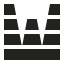

Direction A · Abstract markStrata
Four bands of rock strata are cut by two canyons, and the negative space forms a W. It reads as landform on a precise grid.
- Strength: the most "pattern" of the three, and it extends well into textures and signage.
- Risk: the stepped top can read as a crown or battlement.
- Type: drawn wordmark based on Outfit, with Newsreader for editorial text.